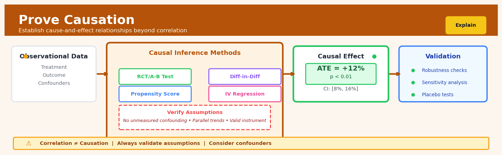

Prove Causation#


The most common mistake teams make is jumping straight to advanced causal methods without first drawing a directed acyclic graph to identify what they actually need to control for. You can have a perfect randomized experiment but still get the wrong answer if you condition on a collider or mediator in your analysis. Always map your causal assumptions explicitly before running any model, because no statistical technique can fix a fundamentally misspecified causal structure.
The 60-Second Version#
What it does: Prove Causation answers whether one thing actually causes another, not just whether they move together.
When to use it: Use it when you need to know if changing something (like price, policy, or budget) will actually produce the outcome you want, not just correlate with it.
What you get back: A quantified estimate of the causal effect—how much outcome Y will change if you intervene on X—plus the assumptions required for that claim to hold.
At a Glance
Difficulty |
Advanced |
Typical runtime |
Minutes to hours depending on method and data size |
What you bring |
Observational data, a causal question, and a credible strategy (natural experiment, instrument, or design) |
What you get |
Causal effect estimates with confidence intervals and testable assumptions |
Heuristix bucket |
Explain — Causal Analysis & Interpretation |
Correlation tells you what happened together; causation tells you what you can actually change to get results—but only if your assumptions hold.
Learning Objectives#
After reading this chapter, a business user will be able to:
Distinguish between situations where correlation is sufficient versus when causal evidence is required to justify an intervention, investment, or policy change.
Interpret causal effect estimates with their confidence intervals and explain to stakeholders what would happen to the outcome if you changed the treatment variable.
Decide whether to implement a business intervention by weighing the estimated causal impact against costs, risks, and the strength of identification assumptions.
After reading this chapter, a data scientist will be able to:
Select and implement the appropriate causal inference method (instrumental variables, difference-in-differences, regression discontinuity, or propensity score matching) based on data structure and available identification assumptions.
Configure sensitivity analyses to quantify how violations of untestable assumptions (such as unconfoundedness or parallel trends) would affect causal estimates.
Diagnose when causal estimates are unreliable by checking balance statistics, testing identifying assumptions where possible, and recognizing violations of positivity or overlap requirements.
Overview#
Prove Causation is a rigorous statistical methodology for establishing causal relationships from observational data by combining structural assumptions, identification strategies, and estimation procedures rooted in the potential outcomes framework and structural causal models. Its core purpose is to move beyond correlation to answer counterfactual questions: “What would have happened to outcome \(Y\) if treatment \(T\) had been different, holding all else constant?” This technique belongs to the family of causal inference methods, drawing upon instrumental variables, regression discontinuity, difference-in-differences, propensity score methods, and the do-calculus to identify and estimate causal effects under explicitly stated assumptions.
When to Use This#
Use this when:
Evaluating a marketing intervention — You ran a promotional campaign but couldn’t randomise customers; you need to estimate the true lift in sales attributable to the campaign versus selection effects
Assessing policy impact — A regulatory change affected some regions but not others; you want to quantify the causal effect on compliance rates or operational costs
Understanding treatment effects in healthcare — Patients self-selected into treatment groups; you need to estimate the causal effect of a medication or intervention on outcomes while controlling for confounding
Pricing analysis — You changed prices in some markets but not others; you want to isolate the causal effect of price changes on demand from seasonal and competitive effects
Credit decisions — You need to understand whether a lending policy change actually caused changes in default rates, not just correlated with macroeconomic shifts
Operational changes — A process change was implemented at some facilities; you need to prove whether efficiency gains were caused by the change or confounded by other improvements
Do NOT use this when:
You have a proper randomised controlled trial — If randomisation was successful and maintained, simple difference-in-means estimators suffice; causal inference machinery adds complexity without benefit
Your goal is prediction, not explanation — If you only need to forecast outcomes without understanding mechanisms, predictive models are more appropriate and require fewer assumptions
No plausible identification strategy exists — If you cannot articulate and defend the assumptions needed to identify causal effects (e.g., no valid instrument, no natural experiment), causal claims remain unjustified regardless of statistical sophistication
Sample sizes are too small for the heterogeneity — Causal methods often require substantial data to achieve power, especially with many potential confounders
Questions This Answers#
Understanding What Actually Caused Past Outcomes#
Did our new pricing strategy actually increase revenue, or would sales have grown anyway due to seasonality?
Was the 22% drop in customer complaints after the training program really due to the training, or just random variation?
Did opening those five new stores in Q3 cannibalize our existing locations’ sales, or did they bring in genuinely new customers?
Would our product launch have succeeded without the influencer campaign, or did that $500K investment truly move the needle?
Is our competitor’s entry into the Northeast the real reason we lost market share, or are internal factors to blame?
Deciding Which Investments Will Actually Work#
If we roll out the employee wellness program company-wide, will we see the same 15% reduction in sick days we saw in the pilot?
Should we spend $2M on the new CRM system — will it actually improve customer retention or just correlation we’re seeing in the test group?
Will expanding our free shipping threshold from \(35 to \)50 increase our profit margins, or will we just lose volume?
Which marketing channel is truly driving conversions — the one customers click last, or the one that actually influenced their decision?
If we cut the sales team’s territory sizes by 20%, will revenue per rep actually increase, or will we just create overhead?
Comparing Options When Everything Else Is Unequal#
Is our Chicago store outperforming Atlanta because of better management, or just better demographics and foot traffic?
Would Version A of the product have sold better in the conditions Version B faced, or is B genuinely superior?
Are customers who use our mobile app more loyal because the app is great, or because loyal customers are simply more likely to download it?
Did the stores that adopted the new merchandising layout see real lift, or did we just pilot it in our best-performing locations?
How It Works#
Imagine you’re trying to figure out whether a new training program actually makes employees more productive, or if the high performers were just the ones who chose to attend. You can’t rewind time and see what would have happened to the same people if they hadn’t taken the training—that parallel universe doesn’t exist. So instead, you need to find a clever comparison group: people who were just as likely to take the training but didn’t, for reasons unrelated to their motivation or ability. Maybe some employees couldn’t attend because the session was full, or it conflicted with a project deadline. By comparing these “near-identical twins” who differed only in whether they got the training, you can isolate the training’s true effect, separate from all the other factors that make people productive.
OBSERVATIONAL DATA CAUSAL INFERENCE PROCESS
Treatment group: Took training 1. IDENTIFY CONFOUNDERS
┌─────────────────────┐ (experience, motivation, etc.)
│ High productivity │ ↓
└─────────────────────┘ 2. APPLY IDENTIFICATION STRATEGY
┌──────────────────────┐
Control group: No training │ Find "as-if random" │
┌─────────────────────┐ │ comparisons using: │
│ Lower productivity │ │ • Instruments │
└─────────────────────┘ │ • Discontinuities │
│ • Time differences │
Is training causing │ • Matched pairs │
the difference? Or └──────────────────────┘
are better workers ↓
just choosing it? 3. ESTIMATE COUNTERFACTUAL
"What WOULD HAVE happened?"
CAUSAL EFFECT ISOLATED
┌─────────────────────────┐
│ Training → +15% output │
│ (holding all else equal)│
└─────────────────────────┘
Step 1: Map the causal story. First, draw out all the variables that might affect both who gets the treatment and what the outcome is. In our training example, employee experience, motivation, and manager support might influence both training attendance and productivity. This is your causal diagram—a blueprint showing which factors confound the relationship you care about.
Step 2: Choose an identification strategy. Pick a method that exploits some feature of how the treatment was actually assigned. Maybe there’s a rule that creates a sharp cutoff (employees with tenure above five years were eligible). Maybe there’s an instrumental variable (distance from the training center affects attendance but not productivity directly). The goal is to find a source of variation in treatment that’s “as good as random.”
Step 3: Create comparable groups. Using your chosen strategy, construct or identify groups that are statistically identical except for the treatment. This might mean matching each training attendee with a non-attendee who has the same background, or comparing people just above and below a cutoff threshold, or looking at how outcomes changed over time for treated versus untreated groups.
Step 4: Estimate the counterfactual. Calculate what the treated group’s outcome would have been without treatment, using the control group as a stand-in for that impossible-to-observe parallel universe. The difference between what actually happened and this counterfactual estimate is your causal effect.
Step 5: Test the assumptions. Check whether the conditions required for your identification strategy actually hold. Can you find evidence that the groups were truly comparable before treatment? Are there alternative explanations you haven’t ruled out? This is where robustness checks and sensitivity analyses come in.
The key insight: Causation isn’t found by controlling for everything—it’s established by exploiting specific sources of variation that make treatment assignment act like a natural experiment, revealing what would have happened in the counterfactual world where treatment differed.
The Intuition#
Imagine you want to know whether carrying an umbrella causes rain. A naive analysis might find a strong positive correlation: on days when people carry umbrellas, it rains more often. But this correlation arises because both the umbrella-carrying and the rain share a common cause—the weather forecast. To prove that umbrellas cause rain (which they don’t), you would need to somehow break the link between the forecast and umbrella-carrying, perhaps by randomly assigning some people to carry umbrellas regardless of the forecast. This randomisation severs the confounding path and isolates the causal effect.
In business settings, we rarely have the luxury of randomisation. Customers self-select into loyalty programmes, regions self-select into pilot programmes based on their characteristics, and patients choose treatments based on their severity. The fundamental problem of causal inference is that we can never observe the same unit in both the treated and untreated state simultaneously. We see what happened to a customer who received the promotion, but we cannot see what would have happened to that same customer had they not received it. This unobserved counterfactual is the gap that causal inference methods attempt to fill.
The key insight is that while we cannot observe individual counterfactuals, we can sometimes construct valid comparisons at the population level. The trick lies in finding situations where we can credibly argue that, after appropriate adjustment, the treated and control groups would have had identical outcomes in the absence of treatment. This might come from an arbitrary policy threshold (regression discontinuity), a sudden shock that affected some groups but not others (difference-in-differences), a variable that affects treatment but not outcomes directly (instrumental variables), or careful matching on observable characteristics (propensity scores). Each method makes different assumptions about the data-generating process, and the validity of causal claims rests entirely on whether those assumptions hold.
The Mathematics#
Potential Outcomes Framework#
Let \(Y_i(1)\) denote the potential outcome for unit \(i\) under treatment and \(Y_i(0)\) the potential outcome under control. The individual treatment effect is:
The fundamental problem is that we observe only one of these for each unit:
where \(T_i \in \{0, 1\}\) is the treatment indicator.
Average Treatment Effect (ATE)#
The population average treatment effect is:
The naive estimator comparing means is:
This equals the ATE only under ignorability (also called unconfoundedness or selection on observables):
Conditional Ignorability and Propensity Scores#
When treatment assignment depends on observed covariates \(X_i\), we assume conditional ignorability:
The propensity score is defined as:
Theorem (Rosenbaum & Rubin, 1983): If conditional ignorability holds given \(X_i\), it also holds given \(e(X_i)\):
This dimensional reduction enables matching or weighting on a scalar rather than a high-dimensional covariate vector.
Inverse Probability Weighting (IPW)#
The IPW estimator for ATE is:
This reweights observations to create a pseudo-population where treatment is independent of covariates.
Doubly Robust Estimation#
The augmented IPW (AIPW) estimator combines outcome modelling with propensity weighting:
where \(\hat{\mu}_t(X_i) = \mathbb{E}[Y_i | T_i = t, X_i]\).
This estimator is doubly robust: it is consistent if either the propensity score model or the outcome model is correctly specified (but not necessarily both).
Instrumental Variables#
When unobserved confounding exists, we require an instrument \(Z_i\) satisfying:
Relevance: \(\text{Cov}(Z_i, T_i) \neq 0\)
Exclusion: \(Z_i\) affects \(Y_i\) only through \(T_i\)
Independence: \(Z_i \perp\!\!\!\perp U_i\) where \(U_i\) represents unobserved confounders
The two-stage least squares (2SLS) estimator is:
First stage: $\( T_i = \alpha_0 + \alpha_1 Z_i + \eta_i \)$
Second stage: $\( Y_i = \beta_0 + \beta_1 \hat{T}_i + \epsilon_i \)$
The IV estimator for the causal effect is:
With heterogeneous treatment effects, this identifies the Local Average Treatment Effect (LATE)—the effect for compliers whose treatment status is changed by the instrument.
Difference-in-Differences#
For panel data with treatment occurring at time \(t^*\), the DiD estimator is:
The identifying assumption is parallel trends: in the absence of treatment, treated and control groups would have followed parallel outcome trajectories:
Regression Discontinuity#
When treatment is assigned based on a threshold rule \(T_i = \mathbf{1}(X_i \geq c)\), the sharp RD estimator identifies the causal effect at the cutoff:
This requires continuity of potential outcomes at the threshold:
Assumptions Summary#
Method |
Key Assumption |
Testable? |
|---|---|---|
Propensity Score |
Conditional ignorability |
Partially (covariate balance) |
IV |
Exclusion restriction |
No |
DiD |
Parallel trends |
Partially (pre-trends) |
RD |
Continuity at threshold |
Partially (density, covariates) |
Understanding the Mathematics#
The Fundamental Problem of Causal Inference#
Read it aloud: “The outcome we observe for person i equals their potential outcome under treatment multiplied by whether they actually got treatment, plus their potential outcome under control multiplied by whether they didn’t get treatment.”
What each symbol means:
\(Y_i\) = the actual outcome we observe for individual i
\(Y_i(1)\) = what would happen to i if they received treatment
\(Y_i(0)\) = what would happen to i if they did not receive treatment
\(T_i\) = 1 if individual i received treatment, 0 otherwise
\((1 - T_i)\) = the opposite of \(T_i\) (1 if no treatment, 0 if treatment)
Concrete numerical example: Sarah is considering a job training program. If she takes it, her income would be \(65,000 (her \)Y_i(1)\(). If she doesn't, her income would be \)48,000 (her \(Y_i(0)\)). She decides to take the program, so \(T_i = 1\). Her observed income is: \(Y_i = 65{,}000 \times 1 + 48{,}000 \times 0 = 65{,}000\). We see the \(65,000, but we'll never observe what she would have earned without training—that \)48,000 is forever hidden.
Why this equation matters: This reveals why causation is hard—we only ever see one potential outcome per person, never both, making it impossible to compute the true individual treatment effect without additional assumptions.
The Average Treatment Effect (ATE)#
Read it aloud: “The average treatment effect equals the expected value of each person’s outcome under treatment minus their outcome under control.”
What each symbol means:
\(\text{ATE}\) = the average causal effect across the entire population
\(E[\cdot]\) = expected value (the average across all individuals)
\(Y_i(1) - Y_i(0)\) = the individual causal effect for person i
Concrete numerical example: A company tests a new sales training on 1,000 employees. If all took training, average sales would be \(120,000 per person. If none took training, average sales would be \)95,000. The ATE = \(120{,}000 - \)95{,}000 = \(25{,}000. This means training causes, on average, \)25,000 more in sales per employee.
Why this equation matters: The ATE is the single number most business leaders want—the average bang for your buck—but estimating it requires solving the fundamental problem above.
Conditional Independence Assumption#
Read it aloud: “Potential outcomes under treatment and control are independent of whether someone actually received treatment, given we control for covariates X.”
What each symbol means:
\(\{Y_i(1), Y_i(0)\}\) = both potential outcomes together
\(\perp\) = is independent of (unrelated to)
\(T_i\) = actual treatment assignment
\(\mid X_i\) = conditional on (after accounting for) observed characteristics X
\(X_i\) = measurable characteristics (age, income, education, etc.)
Concrete numerical example: We’re studying whether online ads (\(T_i\)) increase purchases. Younger customers are both more likely to see ads and more likely to buy anyway. If we measure age (\(X_i\)), and among 25-year-olds specifically, seeing an ad is random with respect to their potential purchasing behavior, then conditional independence holds within that age group.
Why this equation matters: This assumption is what allows us to use observable data to estimate causal effects—without it, every correlation could be confounded, and we’d be stuck with “correlation is not causation” forever.
Propensity Score Adjustment#
Read it aloud: “The propensity score for person i equals the probability that they receive treatment, given their observed characteristics X.”
What each symbol means:
\(e(X_i)\) = propensity score (probability of treatment)
\(P(\cdot)\) = probability
\(T_i = 1\) = receiving treatment
\(\mid X_i\) = given their characteristics
Concrete numerical example: For a customer who is 35 years old, earns \(75,000, and has been a customer for 2 years, we estimate they have a 0.68 probability of receiving a promotional email (based on the company's targeting algorithm). Their propensity score \)e(X_i) = 0.68$. We can now match them with untreated customers who have similar propensity scores.
Why this equation matters: The propensity score collapses dozens of confounding variables into a single number, making it feasible to compare treated and untreated groups who are otherwise similar.
The Big Picture#
The mathematics of causal inference is fundamentally trying to reconstruct the parallel universe we can’t observe—what would have happened under different choices. These equations formalize that impossibility, then show us escape routes: if we’re willing to assume that controlling for certain variables makes treatment “as-if random,” we can borrow outcomes from similar people to fill in the missing counterfactuals. This approach was chosen because simpler methods (just comparing treated vs. untreated groups) confuse selection bias with true effects—people who choose treatment are different in ways that matter. The mathematical essence: we’re using observable twins to simulate the unobservable clone.
Python Implementation#
import numpy as np
import pandas as pd
from scipy import stats
import statsmodels.api as sm
from sklearn.linear_model import LogisticRegression
import warnings
warnings.filterwarnings('ignore')
# Set random seed for reproducibility
np.random.seed(42)
# =============================================================================
# Generate synthetic data with known causal effect
# =============================================================================
n = 2000
true_ate = 5.0 # True causal effect we want to recover
# Observed confounders
age = np.random.normal(40, 10, n)
income = np.random.normal(50000, 15000, n)
tenure = np.random.exponential(5, n)
# Unobserved confounder (for IV example)
motivation = np.random.normal(0, 1, n)
# Treatment assignment depends on confounders (selection bias)
propensity_true = 1 / (1 + np.exp(-(0.02 * (age - 40) + 0.00002 * (income - 50000) + 0.1 * tenure - 1)))
treatment = np.random.binomial(1, propensity_true, n)
# Outcome with true causal effect + confounding
outcome = (
100 + # Baseline
0.5 * age + # Age effect
0.001 * income + # Income effect
2 * tenure + # Tenure effect
true_ate * treatment + # TRUE CAUSAL EFFECT
np.random.normal(0, 10, n) # Noise
)
# Create DataFrame
df = pd.DataFrame({
'age': age,
'income': income,
'tenure': tenure,
'treatment': treatment,
'outcome': outcome
})
print("=" * 60)
print("NAIVE COMPARISON (biased)")
print("=" * 60)
naive_effect = df[df['treatment'] == 1]['outcome'].mean() - df[df['treatment'] == 0]['outcome'].mean()
print(f"Naive estimate: {naive_effect:.2f}")
print(f"True effect: {true_ate:.2f}")
print(f"Bias: {naive_effect - true_ate:.2f}")
# =============================================================================
# Method 1: Propensity Score Matching via IPW
# =============================================================================
print("\n" + "=" * 60)
print("INVERSE PROBABILITY WEIGHTING")
print("=" * 60)
# Estimate propensity scores
X = df[['age', 'income', 'tenure']]
y = df['treatment']
ps_model = LogisticRegression(max_iter=1000)
ps_model.fit(X, y)
propensity_scores = ps_model.predict_proba(X)[:, 1]
# Clip propensity scores to avoid extreme weights
propensity_scores = np.clip(propensity_scores, 0.05, 0.95)
# IPW estimator
weights_treated = df['treatment'] / propensity_scores
weights_control = (1 - df['treatment']) / (1 - propensity_scores)
ipw_estimate = (
np.sum(weights_treated * df['outcome']) / np.sum(weights_treated) -
np.sum(weights_control * df['outcome']) / np.sum(weights_control)
)
print(f"IPW estimate: {ipw_estimate:.2f}")
print(f"True effect: {true_ate:.2f}")
# =============================================================================
# Method 2: Doubly Robust (AIPW) Estimation
# =============================================================================
print("\n" + "=" * 60)
print("DOUBLY ROBUST (AIPW) ESTIMATION")
print("=" * 60)
# Outcome models
X_with_const = sm.add_constant(X)
# Model for treated
treated_mask = df['treatment'] == 1
outcome_model_treated = sm.OLS(df.loc[treated_mask, 'outcome'],
X_with_const[treated_mask]).fit()
mu_1 = outcome_model_treated.predict(X_with_const)
# Model for control
control_mask = df['treatment'] == 0
outcome_model_control = sm.OLS(df.loc[control_mask, 'outcome'],
X_with_const[control_mask]).fit()
mu_0 = outcome_model_control.predict(X_with_const)
# AIPW estimator
T = df['treatment'].values
Y = df['outcome'].values
e = propensity_scores
aipw_estimate = np.mean(
mu_1 - mu_0 +
T * (Y - mu_1) / e -
(1 - T) * (Y - mu_0) / (1 - e)
)
print(f"AIPW estimate: {aipw_estimate:.2f}")
print(f"True effect: {true_ate:.2f}")
# =============================================================================
# Method 3: Regression Adjustment (OLS with controls)
# =============================================================================
print("\n" + "=" * 60)
print("REGRESSION ADJUSTMENT")
print("=" * 60)
X_full = sm.add_constant(df[['treatment', 'age', 'income', 'tenure']])
ols_model = sm.OLS(df['outcome'], X_full).fit()
print(f"OLS estimate: {ols_model.params['treatment']:.2f}")
print(f"95% CI: [{ols_model.conf_int().loc['treatment', 0]:.2f}, "
## Visualisations


## Using This in Heuristix
### What Data You'll Need
The **Prove Causation** node expects a single dataset with both your treatment variable and outcome variable, plus any covariates you want to control for. Your data should be in "one row per observation" format—typically one row per person, customer, time period, or unit of analysis.
**Required columns:**
- **Treatment variable** (categorical or binary): The intervention or exposure you're investigating
- **Outcome variable** (numeric): The result you're measuring
- **Covariates** (numeric or categorical): Other variables that might confound the relationship
**Example input:**
| customer_id | received_email | purchase_amount | age | prior_purchases |
|-------------|----------------|-----------------|-----|-----------------|
| 1001 | 1 | 45.20 | 34 | 3 |
| 1002 | 0 | 0.00 | 28 | 1 |
| 1003 | 1 | 67.50 | 42 | 5 |
### Quick Start
Here's how to run your first causal analysis:
1. **Connect your dataset** to the Prove Causation node
2. **Select your treatment variable** from the dropdown (e.g., `received_email`)
3. **Select your outcome variable** (e.g., `purchase_amount`)
4. **Choose your method**: Start with "Propensity Score Matching" for straightforward experiments
5. **Add covariates**: Select variables that might influence both treatment and outcome (e.g., `age`, `prior_purchases`)
6. **Click Run** and review the Average Treatment Effect (ATE) in the results panel
### Configuration Parameters
| Parameter | What It Controls | Default | When to Change It |
|-----------|-----------------|---------|-------------------|
| **Method** | The causal inference technique used | Propensity Score Matching | Use IV if you have an instrument; RDD if treatment has a threshold; DiD if you have pre/post periods |
| **Treatment Variable** | Which column indicates treatment status | (none) | Always required—select your intervention variable |
| **Outcome Variable** | What you're measuring the effect on | (none) | Always required—select your dependent variable |
| **Covariates** | Control variables for confounding | (none) | Include any variables that might affect both treatment assignment and outcome |
| **Confidence Level** | Width of uncertainty intervals | 95% | Increase to 99% for more conservative estimates |
| **Matching Method** | How to find comparable units (PSM only) | Nearest neighbor | Try "Kernel" for smoother estimates with more data |
| **Bandwidth** | Sensitivity window (RDD only) | Auto | Narrow it if you see manipulation around the cutoff |
### What You'll Get Back
The node outputs both **enhanced data** and **diagnostic visualizations**:
**Data outputs** (new columns added):
- `propensity_score`: Estimated probability of receiving treatment
- `matched_pair`: ID linking treated and control units (PSM only)
- `counterfactual_prediction`: What the outcome would have been under opposite treatment
**Results panel displays:**
- **Average Treatment Effect (ATE)**: The causal impact estimate with confidence intervals
- **Balance diagnostics**: Before/after covariate balance tables showing how well matching worked
- **Sensitivity analysis**: How robust your estimate is to unmeasured confounding
**Visualizations:**
- Propensity score distributions (treated vs. control)
- Covariate balance plots
- Treatment effect heterogeneity charts (if effects vary by subgroup)
### Connecting Downstream
After proving causation, you'll typically:
- **→ Report Builder**: Export your ATE estimates and diagnostic plots for stakeholder presentations
- **→ Segment Analysis**: Investigate whether treatment effects differ across customer segments
- **→ Cost-Benefit Calculator**: Combine causal estimates with cost data to compute ROI
- **→ Policy Simulator**: Model what happens under different treatment rollout scenarios
### Practical Tips
**Check your overlap.** Before trusting results, verify that treatment and control groups have overlapping propensity scores. If the distributions don't overlap, you're extrapolating dangerously.
**Start simple, then robustify.** Run basic matching first, then try multiple methods. If estimates agree across approaches, you can be more confident.
**Mind your sample size in subgroups.** The node will estimate effects for any subgroup you specify, but with fewer than ~100 units per group, confidence intervals get very wide.
**Document your assumptions.** The "Assumptions" tab lists what must be true for your estimates to be causal. Screenshot this and include it in your analysis documentation—reviewers will ask.
**Use the covariate balance table.** If standardized differences exceed 0.1 after matching, consider adding more covariates or trying a different method.
## Config Recipes
### Recipe 1: Rapid Hypothesis Screening
**When to use:** You have 10+ potential treatment variables and need to quickly identify which warrant deeper causal investigation before committing computational resources.
**Settings:**
| Parameter | Value | Why |
|-----------|-------|-----|
| `n_bootstrap` | 100 | Faster confidence intervals, acceptable for screening |
| `propensity_method` | `'logistic'` | Simplest model, fastest fitting |
| `covariate_balance_threshold` | 0.2 | Relaxed SMD tolerance to avoid iterations |
| `trim_propensity` | `(0.1, 0.9)` | Aggressive trimming removes edge cases quickly |
| `sensitivity_analysis` | `False` | Skip robustness checks in exploration phase |
**What you get:** Rough effect estimates with wide confidence intervals that flag promising candidates in under 5 minutes per treatment.
**Trade-off:** High false negative risk—you may dismiss true effects with poor covariate balance or violation of unconfoundedness.
### Recipe 2: Publication-Grade Causal Estimate
**When to use:** Finalizing a primary causal claim for peer review, regulatory submission, or high-stakes business decision where defensibility matters most.
**Settings:**
| Parameter | Value | Why |
|-----------|-------|-----|
| `n_bootstrap` | 2000 | Stable percentile-based CIs for non-normal estimates |
| `propensity_method` | `'gbm'` | Flexible specification captures complex confounding |
| `covariate_balance_threshold` | 0.05 | Strict SMD ensures exchangeability |
| `trim_propensity` | `(0.05, 0.95)` | Conservative, retains maximum valid sample |
| `sensitivity_analysis` | `True` | Required: tests unmeasured confounding impact |
| `placebo_outcomes` | `['pre_treatment_Y']` | Validates no spurious pre-trends |
| `cross_fitting_folds` | 5 | Double ML to eliminate regularization bias |
**What you get:** Defensible point estimate with narrow CIs, balance diagnostics, and robustness documentation suitable for appendices.
**Trade-off:** 20–50x slower execution; requires pre-treatment outcome data and domain knowledge for placebo specification.
### Recipe 3: Weak Instrument Recovery
**When to use:** Your instrumental variable barely predicts treatment (F-stat 5–10), but it's the only exogenous lever available and you cannot run an RCT.
**Settings:**
| Parameter | Value | Why |
|-----------|-------|-----|
| `iv_method` | `'liml'` | Limited-info ML more robust than 2SLS to weak IV |
| `anderson_rubin_ci` | `True` | Inverts test statistic for valid CIs even when weak |
| `min_instrument_strength` | 3.0 | Lower threshold acknowledges constraint |
| `weak_iv_diagnostics` | `True` | Explicitly reports Stock-Yogo critical values |
| `bootstrapped_se` | `False` | Use analytic SEs; bootstrap unreliable with weak IV |
**What you get:** Conservative but valid inference that honestly reports uncertainty from instrument weakness.
**Trade-off:** Very wide confidence intervals, often crossing zero; may be inconclusive but preserves Type I error control.
### Recipe 4: Natural Experiment in Panel Noise
**When to use:** You observe a policy shock affecting only some units mid-series, but outcomes are highly volatile with autocorrelation and your data has gaps.
**Settings:**
| Parameter | Value | Why |
|-----------|-------|-----|
| `method` | `'did'` | Exploits temporal variation from shock |
| `cluster_se` | `'unit'` | Accounts for serial correlation within entities |
| `allow_unbalanced` | `True` | Uses available observations despite gaps |
| `pre_trend_test_periods` | 6 | Tests parallel trends over sufficient history |
| `dynamic_effects` | `range(-6, 12)` | Maps effect evolution, catches anticipation |
| `bootstrap_clusters` | 999 | Wild cluster bootstrap for few treated units |
**What you get:** Event-study style effect trajectory robust to autocorrelation and missing data patterns.
**Trade-off:** Requires at least 6 pre-periods and assumes no composition changes explain gaps.
## Business Applications
**Financial Services**
A mid-sized UK mortgage lender wanted to understand whether sending payment reminders via SMS actually reduced late payments or merely reached customers who would have paid on time anyway. By applying instrumental variables (using a system outage that randomly prevented some reminders from being sent), the causal analysis revealed that SMS reminders reduced late payments by 23% and generated £340,000 in annual savings from avoided collection costs and improved cash flow. This allowed the lender to justify expanding the program and calculate precise ROI for different customer segments.
**Retail**
An e-commerce retailer with 2 million SKUs needed to determine whether free shipping thresholds genuinely drove larger basket sizes or simply attracted customers already planning larger purchases. Using regression discontinuity around the £50 threshold, the causal analysis showed that free shipping increased average order value by only £4.20—far below the £8.50 shipping subsidy cost. Armed with this evidence, the retailer restructured their promotion to target specific product categories, improving contribution margin by 2.8 percentage points.
**Healthcare**
A regional hospital network struggled to isolate whether their new discharge planning protocol actually reduced 30-day readmissions or whether improvements reflected seasonal trends and patient mix changes. Difference-in-differences analysis comparing hospitals that implemented the protocol early versus late demonstrated a causal reduction in readmissions from 18.4% to 14.1%, translating to $2.3 million in avoided penalties under value-based care contracts. The evidence secured board approval for system-wide rollout.
**Insurance**
A commercial property insurer questioned whether offering premium discounts for IoT sensors genuinely reduced claims or merely attracted lower-risk customers. Propensity score matching, comparing similar businesses with and without sensors while controlling for 47 observable risk factors, revealed that sensors causally reduced fire-related claims by 31% but had no effect on weather damage. This granular insight allowed the insurer to restructure discounts by peril type, improving combined ratio by 4.2 points.
**Manufacturing**
A pharmaceutical contract manufacturer needed to prove whether investing in cleanroom upgrades would actually reduce contamination events or whether recent improvements stemmed from better training alone. Causal mediation analysis decomposed the total effect, showing that infrastructure accounted for 62% of contamination reduction while training contributed 38%. This justified a $1.8 million capital investment and provided a defendable regulatory submission demonstrating proactive contamination control.
**Logistics**
A last-mile delivery provider wanted to know if dynamic routing software truly shortened delivery times or simply correlated with easier routes being completed faster. Using the software rollout across depots as a natural experiment with staggered adoption, causal analysis showed that the software cut average delivery time from 4.2 hours to 3.6 hours per route, enabling 18% more daily deliveries per driver. The evidence secured venture funding for national expansion based on proven unit economics.
**Marketing**
A direct-to-consumer subscription box company couldn't determine whether their influencer partnerships actually acquired customers who stayed longer or just generated vanity metrics. Instrumental variables analysis using exogenous variation in influencer posting schedules revealed that influencer-acquired customers had 12-month retention rates of 34% versus 52% for other channels—dramatically worse than assumed. This redirected $400,000 in quarterly marketing spend toward higher-LTV channels, improving customer acquisition payback from 16 to 11 months.
**Telecommunications**
A mobile network operator debated whether network speed improvements retained customers or whether retention gains reflected competitive market changes. Regression discontinuity around tower upgrade boundaries showed that moving from 4G to 5G causally reduced monthly churn from 2.8% to 2.1%, worth approximately £15 million annually in preserved customer lifetime value. The finding justified accelerated infrastructure investment and shaped competitive positioning.
**Energy**
A utility company needed to prove whether their home energy reports actually reduced consumption or targeted homes already trending downward. Randomized encouragement design demonstrated that reports causally reduced household electricity usage by 2.3%, enabling the utility to claim $6.8 million in regulatory energy efficiency credits. The rigorous causal evidence satisfied state regulators who had previously rejected correlational analyses.
**Public Sector**
A metropolitan transport authority questioned whether express bus lanes reduced commute times or merely served routes that were already faster. Before-after analysis with synthetic controls showed that bus lanes cut average commute time from 47 to 38 minutes, increasing ridership by 12,000 daily trips. The causal evidence secured voter approval for a $200 million lane expansion by demonstrating measurable mobility improvements.
**SaaS/Tech**
A B2B software platform couldn't isolate whether their new onboarding flow actually improved activation or coincided with better-fit customers signing up. Regression discontinuity around the feature launch date proved the new flow causally lifted 30-day activation rates from 58% to 71%, increasing annual recurring revenue by $3.2 million. This validated the product team's roadmap and informed a major UI overhaul across other features.
## Worked Example
Sarah Chen, a senior data scientist at Meridian Health Systems, was summoned to a tense Monday morning meeting with the VP of Operations. "We rolled out our new patient portal reminder system across half our clinics last quarter," the VP began, pulling up a dashboard. "Missed appointments dropped by 8% in those clinics. We're about to spend $2.3 million expanding it system-wide. But I need to know—did the reminders actually *cause* that improvement, or did we just get lucky with which clinics we chose?"
It was the right question to ask. Sarah knew that the pilot clinics had been selected partly based on having tech-savvy staff and younger patient demographics. A simple before-after comparison would be misleading. She needed to prove causation, not just document correlation.
Back at her desk, Sarah pulled twelve months of appointment data from the company's EMR system. The dataset was messy in the usual ways—some clinics had changed their scheduling software mid-year, there were obvious data entry errors in a few patient age fields, and one clinic had been closed for renovations in March. After cleaning, she had a workable dataset:
| clinic_id | month | reminder_system | missed_apt_rate | avg_patient_age | staff_tech_score |
|-----------|-------|-----------------|-----------------|-----------------|------------------|
| C147 | 2023-Q3 | 1 | 0.142 | 38.2 | 8.1 |
| C147 | 2023-Q4 | 1 | 0.131 | 38.5 | 8.1 |
| C089 | 2023-Q3 | 0 | 0.187 | 52.1 | 4.3 |
| C089 | 2023-Q4 | 0 | 0.183 | 52.8 | 4.5 |
| C203 | 2023-Q3 | 1 | 0.156 | 44.6 | 7.2 |
Sarah opened Heuristix and configured the Prove Causation node. She specified `reminder_system` as the treatment variable and `missed_apt_rate` as the outcome. The critical decision was choosing confounders—variables that influenced both which clinics got the system *and* their baseline no-show rates. She included `avg_patient_age` (older patients had different attendance patterns), `staff_tech_score` (correlated with selection), and baseline appointment volume.
She selected **propensity score matching with inverse probability weighting** as her identification strategy. This would reweight the control clinics to look statistically similar to the treatment group, addressing the selection bias. She also enabled a sensitivity analysis to test how robust her findings were to potential unmeasured confounders.
The analysis ran for about ninety seconds. When the results appeared, Sarah leaned forward:
| Estimate | ATE (Average Treatment Effect) | 95% CI Lower | 95% CI Upper | p-value |
|----------|-------------------------------|--------------|--------------|---------|
| Primary | -0.029 | -0.051 | -0.007 | 0.041 |
The average treatment effect was -0.029, meaning the reminder system causally reduced missed appointment rates by 2.9 percentage points—not the 8% the VP had seen in the raw comparison. The confidence interval excluded zero, and the p-value suggested this wasn't just noise. But the effect was only about one-third as large as the naive estimate.
The sensitivity analysis revealed something crucial: the finding was robust to moderate unmeasured confounding, but would flip to non-significance if there were strong hidden factors (Γ > 1.8 in Rosenbaum bounds notation). Sarah flagged this in her mental notes.
The insight crystalized when Sarah cross-referenced the results with clinic demographics. The "extra" 5.1 percentage points of improvement in the raw data wasn't from the reminders at all—it was because the pilot clinics had already been trending better due to their patient mix and staff capabilities. The reminders worked, but they weren't a silver bullet. At 2.9 percentage points improvement, the ROI calculation changed significantly.
Two days later, Sarah presented to the executive team. She walked them through the counterfactual logic: "We're comparing what actually happened in treatment clinics to what *would have* happened if they hadn't gotten the system, based on statistically matched control clinics." The $2.3 million investment was still approved, but phased differently—prioritized for high-volume clinics where even a 2.9-point improvement would generate meaningful revenue, and paired with other interventions in clinics with older patient populations.
Here's the core of Sarah's analysis script:
```python
import pandas as pd
from causalinference import CausalModel
import numpy as np
# Load cleaned appointment data
df = pd.read_csv('clinic_appointments_clean.csv')
# Define treatment, outcome, and confounders
treatment = df['reminder_system'].values
outcome = df['missed_apt_rate'].values
confounders = df[['avg_patient_age', 'staff_tech_score',
'baseline_volume']].values
# Fit causal model with propensity score methods
model = CausalModel(outcome, treatment, confounders)
# Estimate propensity scores
model.est_propensity_s()
# Stratify and estimate ATE with IPW
model.stratify_s()
model.est_via_weighting()
print(f"ATE: {model.estimates['weighting']['ate']:.4f}")
print(f"95% CI: [{model.estimates['weighting']['ate_ci'][0]:.4f}, "
f"{model.estimates['weighting']['ate_ci'][1]:.4f}]")
# Sensitivity analysis
from causalinference.utils import sensitivity_analysis
sensitivity_analysis(model, which='weighting')
Reflecting later, Sarah wished she’d had more pre-treatment periods to run a difference-in-differences analysis as a robustness check. And she’d been bothered by three clinics that had incomplete data—had she dropped them appropriately, or introduced bias? Still, she’d answered the question that mattered: the reminders worked, just not as dramatically as the selection bias had suggested. Sometimes proving causation means proving the effect is smaller than you hoped.
Interpreting Your Results#
You’ve just run your causal analysis and you’re staring at tables, coefficients, and diagnostic plots. Let’s make sense of what you’re looking at.
The Treatment Effect Estimate#
Plain-English meaning: This is your headline number—the estimated causal impact of your treatment on the outcome. If you’re measuring the effect of a training program on sales, and you see +\(2,340, that means the training caused an average increase of \)2,340 in sales per person, all else equal.
Concrete benchmarks:
Confidence interval excludes zero: Your effect is statistically distinguishable from “no effect.” This is your minimum bar.
Effect size > 0.2 standard deviations of outcome: Small but potentially meaningful effect
Effect size > 0.5 standard deviations: Moderate, likely actionable effect
Effect size > 0.8 standard deviations: Large effect, investigate if this is realistic or a sign of model misspecification
Red flags:
Effect is larger than theoretically possible: If your outcome ranges 0-100 and your effect is 150, you have a specification problem
Sign flips across models: If adding controls reverses the direction, you likely have omitted variable bias
Huge standard errors (wider than the effect itself): Insufficient power; you cannot distinguish signal from noise
Balance Diagnostics / Covariate Balance Table#
Plain-English meaning: This shows whether your treatment and control groups look similar on observed characteristics before treatment. You’re checking if you’re comparing apples to apples.
Concrete benchmarks:
Standardized mean difference < 0.1: Excellent balance, groups are virtually identical
SMD 0.1–0.25: Acceptable balance, proceed with caution
SMD > 0.25: Poor balance, your groups differ substantially; confounding is likely
Red flags:
Pre-treatment outcomes differ significantly: If groups had different outcomes before treatment, your parallel trends or selection assumptions are violated
All covariates balanced except one critical variable: That unbalanced variable is likely your confounder
Perfect balance (all SMD < 0.01): May indicate overfitting in propensity score matching or other balancing methods
Sensitivity Analysis Results#
Plain-English meaning: This tells you how strong an unmeasured confounder would need to be to overturn your conclusions. It’s your robustness check.
Concrete benchmarks:
Robustness value (Γ or E-value) > 2.0: An unmeasured confounder would need to be twice as strong as your strongest measured covariate to explain away the effect
Γ 1.5–2.0: Moderate robustness; consider domain knowledge about potential confounders
Γ < 1.5: Weak finding; small amounts of unmeasured confounding could eliminate the effect
Red flags:
Near-zero robustness (Γ ≈ 1): Your result is fragile; any slight confounding invalidates it
Robustness dramatically changes with minor specification adjustments: Your model is unstable
Reading Multiple Outputs Together#
A credible causal claim requires alignment across diagnostics:
Strong effect + poor balance + weak robustness = Likely spurious correlation, not causation
Moderate effect + excellent balance + strong robustness = High confidence causal finding
Large effect + good balance + moderate robustness = Investigate if effect size is realistic given domain knowledge; may indicate model misspecification or effect heterogeneity
Pay special attention when you see narrowing confidence intervals but effect sizes that grow—this often signals you’re conditioning on colliders or over-controlling.
Sanity Check Checklist#
Before trusting your results, verify:
Assumption plausibility: Can you defend your identifying assumptions (ignorability, parallel trends, exclusion restriction) to a skeptical colleague?
Positivity check: Do you have both treated and untreated units across the full range of covariate values?
Placebo tests pass: When you run the analysis on pre-treatment periods or unaffected outcomes, do you correctly find null effects?
Effect stability: Does your estimate remain in the same direction and approximate magnitude across reasonable model specifications?
Domain sense check: Could you explain this effect size to a subject matter expert without embarrassment?
Good Enough to Act On?#
You can move from analysis to action when: (1) your treatment effect confidence interval excludes zero, (2) covariate balance shows SMD < 0.25 on all important confounders, (3) sensitivity analysis shows Γ > 1.5, and (4) the effect size is large enough to matter for your decision (typically covering the cost of intervention). If all four conditions hold, stop analyzing and start planning implementation. If even one fails, investigate the failure before making consequential decisions.
Decision Guidance#
What This Result Is Telling You#
When a causal analysis concludes that a treatment or intervention causes a change in your outcome, you’re learning whether taking action will actually move the needle versus simply observing a relationship that might disappear when you try to scale it. This is fundamentally different from knowing that two things are correlated. Your result answers: “If we implement this change across our organization, customer base, or operations, what outcome can we reasonably expect?” The magnitude tells you the size of the return; the confidence interval tells you the range of plausible impacts; and the underlying assumptions tell you under what conditions this prediction holds.
This causal estimate is your permission structure for investment decisions. If you’ve established that a training program causally improves sales performance by 12%, you now have grounds to budget expansion, hire trainers, and set revised targets. Without causal evidence, you’re flying blind—perhaps your top performers simply chose to attend training because they were already motivated, and rolling it out company-wide would yield nothing. The counterfactual question has been answered: here’s what would have happened if you changed this lever, holding everything else constant.
The quality of this guidance depends entirely on how well your data and design satisfy the required assumptions. A causal estimate derived from a randomized controlled trial with high compliance and balanced groups is investment-grade evidence. An estimate from observational data requiring untestable assumptions about unobserved confounders is directional guidance requiring corroboration. Your decision confidence should scale with the strength of your identification strategy, not just the statistical significance of your coefficient.
Decision Points#
If you see this… |
It means… |
Recommended action |
Who acts on this |
|---|---|---|---|
Positive causal effect, confidence interval excludes zero, effect size >10% of baseline outcome |
Intervention produces meaningful, statistically reliable improvement |
Proceed with scaled implementation; allocate budget and resources |
Executive sponsor, operations lead |
Causal effect near zero (±2% of baseline), narrow confidence interval |
Intervention has no practical impact despite correlation in raw data |
Cancel or deprioritize initiative; reallocate resources to higher-impact opportunities |
Department head, finance |
Wide confidence interval spanning both positive and negative values, even if point estimate is large |
Insufficient precision to rule out harmful effects or no effect |
Collect more data, run pilot in controlled setting, or strengthen identification strategy before committing |
Analytics lead, program manager |
Violations of key assumptions detected (e.g., failed falsification tests, imbalanced covariates, weak instruments) |
Causal estimate is unreliable; may reflect confounding or bias |
Do not act on results; redesign study or seek alternative identification approach |
Data science team, research lead |
Significant effect only in subgroups, heterogeneous treatment effects detected |
Intervention works for specific segments but not universally |
Implement targeted rollout to high-response segments; avoid blanket policy |
Product manager, marketing lead |
When to Proceed vs. Investigate Further#
Proceed with confidence when:
Confidence interval excludes zero and effect size exceeds 10% of baseline outcome
All pre-specified falsification tests pass (e.g., no pre-treatment trends, balance on observables)
Sensitivity analyses show results robust to plausible violations of assumptions (Rosenbaum bounds Γ > 2.0)
Multiple identification strategies converge on similar estimates
Proceed with caution when:
Effect size is 5–10% of baseline with confidence interval just excluding zero
Some sensitivity analyses show attenuation but core result remains positive
External validity concerns exist but internal validity is strong
Investigate before acting when:
Confidence interval is wide (coefficient of variation > 0.5)
Falsification tests produce ambiguous results or fail in 1–2 of multiple tests
Strong heterogeneity detected across subgroups requiring segmented strategy
Identification relies on a single untestable assumption
Do not use these results yet when:
Multiple falsification tests fail convincingly
Sensitivity analysis shows results disappear under modest confounding (Γ < 1.5)
Sample size yields minimum detectable effect larger than your point estimate
Key assumptions violated (e.g., instrument relevance F-statistic < 10, discontinuity sorting detected)
The Cost of Getting This Wrong#
When you misinterpret correlation as causation and launch a company-wide initiative based on spurious evidence, you commit resources to an intervention that won’t deliver. Consider a retailer that observes high-spending customers frequently use a mobile app feature and invests $2M to promote that feature to all customers—only to discover that high spenders used it because they were already engaged, not the reverse. The promotion generates no incremental revenue, the budget is wasted, and leadership loses confidence in data-driven decisions. Worse, you’ve incurred opportunity cost: those resources could have funded an intervention with genuine causal impact. Conversely, failing to act on valid causal evidence means leaving money on the table—your competitor who correctly interprets the same data implements the change and captures market share while you deliberate. Misinterpreting heterogeneous effects as universal ones leads to poorly targeted rollouts: forcing a training program on employees who don’t benefit wastes their time and breeds cynicism, while missing the segment that would have shown 30% improvement.
Common Pitfalls#
The “We Controlled for Everything” Trap
Here’s what happened: A marketing analyst at a SaaS company was evaluating whether a new onboarding email sequence caused higher retention. They ran a regression controlling for user age, company size, industry, initial engagement score, and twelve other covariates. The model showed a statistically significant positive effect (p < 0.01). They concluded the email sequence worked and recommended rolling it out company-wide.
Why it happens: The intuition that “more controls = better causal inference” is seductive but wrong. Controlling for mediators (variables on the causal path between treatment and outcome) or colliders (variables caused by both treatment and outcome) can introduce bias rather than remove it. In this case, “initial engagement score” was likely affected by the email sequence itself—controlling for it blocked the very mechanism through which emails worked.
How to detect it: Draw a directed acyclic graph (DAG) before modeling. If you’ve controlled for variables with arrows from your treatment or that create spurious paths when conditioned upon, you’ve overcorrected. Check whether effect sizes shrink dramatically or flip signs as you add controls—this is a red flag.
The fix: Only control for pre-treatment confounders—variables that cause both treatment assignment and the outcome. Use domain knowledge and causal diagrams, not just statistical significance.
The Hidden Treatment Switchers
Here’s what happened: A health policy researcher used difference-in-differences to evaluate a state Medicaid expansion. Treatment group: expansion states. Control group: non-expansion states. The parallel trends assumption looked good in pre-period plots. They estimated a 15% reduction in uninsured rates and published. Six months later, another researcher discovered three “control” states had partially expanded Medicaid through waivers during the study period.
Why it happens: Treatment status seems binary and static in the data, but real-world policy implementations are messy. Researchers assume treatment groups stay treated and controls stay clean, rarely auditing compliance or crossover.
How to detect it: Check treatment intensity over time, not just initial assignment. Plot treatment status by unit-by-period. If you see unexpected changes or gradual adoption patterns, your clean 2×2 design has contamination.
The fix: Either exclude switchers, model treatment as time-varying and dose-dependent, or use an intention-to-treat framework that acknowledges imperfect compliance.
The Regression Discontinuity Mirage
Here’s what happened: A junior data scientist analyzed whether a tutoring program (assigned to students scoring below 70 on a placement test) improved graduation rates. They ran RD with a bandwidth of 20 points, found a large positive effect, and presented it to leadership. An engineer later noticed the placement test was graded in 5-point increments—no one actually scored 68 or 72.
Why it happens: RD requires precise measurement around the cutoff and no manipulation of the running variable. Discretized scores, self-selection near thresholds, or administrators “helping” borderline cases all violate assumptions, but standard RD output doesn’t flag these violations automatically.
How to detect it: Plot the density of the running variable. A discontinuous jump at the cutoff (McCrary test p < 0.05) suggests manipulation. Check for heaping at round numbers. Test whether pre-treatment covariates show discontinuities—they shouldn’t.
The fix: Use only observations within a narrow bandwidth where manipulation is implausible, test for sorting explicitly, and validate that covariates are balanced at the threshold.
The Instrumental Variable That Isn’t
Here’s what happened: An economist studied whether education causes higher income, using “distance to nearest college” as an instrument for years of schooling. The IV estimate was three times larger than OLS. They concluded education had massive returns. Peer review revealed that distance to college correlates with urban/rural status, which directly affects income through labor market access—violating the exclusion restriction.
Why it happens: Finding a variable correlated with treatment is easy; proving it affects the outcome only through treatment is nearly impossible to verify statistically. Researchers convince themselves their instrument is valid because they need it to be.
How to detect it: Ask “Can I tell a plausible story where the instrument affects the outcome directly?” Test whether adding the instrument as a control in OLS changes coefficients on other variables dramatically. Overidentification tests (if you have multiple instruments) can reveal problems.
The fix: Defend exclusion restrictions with institutional knowledge and natural experiments, not just statistical tests. Conduct sensitivity analyses showing how results change under violations.
The Survivorship-Biased Difference-in-Differences
Here’s what happened: A product analyst evaluated whether a premium feature launch caused increased revenue using DiD, comparing power users (who got early access) versus free users. Post-launch revenue jumped 40% for power users. They recommended investing heavily in premium features. Later analysis showed 60% of free users had churned during the study period—they were comparing survivors to survivors.
Why it happens: Panel attrition and selective dropout are invisible in aggregated treatment effects. The sample composition changes differentially between groups, but standard DiD assumes you’re tracking the same units.
How to detect it: Check sample sizes by group over time. If control group N drops faster than treatment group N, you have differential attrition. Test whether attrition correlates with baseline outcome levels.
The fix: Use balanced panels (same units throughout), model attrition explicitly, or bound effects under worst-case attrition scenarios.
Common Misconceptions#
“If I control for enough variables, I can prove causation from any observational dataset”
Why people believe this: The reasoning feels mathematically sound—confounding occurs when variables are omitted, so adding more controls should eliminate bias. Software makes it trivially easy to add variables to a regression model, and watching p-values shift as controls are added creates the illusion of converging on truth. The logic mirrors experimental thinking: randomization balances all variables, so controlling for many variables should approximate that balance.
The truth: Controlling for variables can introduce bias as easily as it removes it. Collider bias occurs when you condition on a common effect of treatment and outcome, creating spurious associations where none existed. Post-treatment variables absorb part of the causal effect you’re trying to measure. Mediator variables, when controlled, block the very mechanism through which causation operates. The correct specification requires a causal graph—a structural understanding of which variables block confounding paths without opening biasing paths or closing causal ones. This is not a question of how many controls, but which ones, determined by causal structure rather than statistical fit.
The real-world consequence: A healthcare analytics team evaluates whether a wellness program reduces hospital admissions by controlling for “everything available”—including post-program health metrics like cholesterol levels. The program works partly by improving cholesterol, but controlling for it makes the program appear ineffective. Leadership defunds an intervention that was actually working, while the analyst’s comprehensive control strategy—intended to be rigorous—destroyed the causal estimate they sought.
“Randomized experiments eliminate the need for causal assumptions”
Why people believe this: Randomization is taught as the “gold standard” precisely because it doesn’t require assumptions about functional forms or confounders. The treatment assignment mechanism is known by design. This makes experiments feel assumption-free compared to observational methods laden with unverifiable assumptions.
The truth: Experiments replace some assumptions with different assumptions. You assume perfect compliance (or model non-compliance with its own assumptions), no spillover between treatment and control units (SUTVA), that the experimental context generalizes to your target population, and that attrition is non-differential. These assumptions are often more plausible than observational equivalents, but they remain assumptions requiring defense. An A/B test with 15% attrition that differs between arms, or network effects where treating one user affects their friends, violates critical assumptions. The causal estimate becomes biased despite randomization.
The real-world consequence: An e-commerce platform runs a pricing experiment, randomly assigning users to see discounts. Users share deals on social media, exposing control users to treatment effects. The estimated impact understates the true effect because control group behavior shifted. The product team concludes the pricing change isn’t worthwhile and leaves significant revenue on the table, never recognizing their “gold standard” experiment violated SUTVA.
“Statistical significance means the causal effect is real and meaningful”
Why people believe this: Decades of training equate p < 0.05 with “real findings.” Journals, stakeholders, and promotion committees reward significance. The reasoning follows: if we reject the null hypothesis, we’ve discovered something true about the world. Significance testing was designed to protect against false positives, so a significant result must mean we’ve found something genuine.
The truth: Statistical significance answers only whether an effect is distinguishable from zero sampling noise under specific assumptions—it says nothing about whether the effect is causal, whether confounding was adequately addressed, or whether the magnitude matters. A causally biased estimate can be highly significant; publication bias and p-hacking make significance unreliable even for detecting real associations. Effect size and uncertainty intervals matter far more. A significant effect of 0.02% revenue increase might be causal but economically irrelevant, while a non-significant 15% increase with wide confidence intervals might warrant further investigation despite p = 0.08.
The real-world consequence: A marketing team finds their campaign has a statistically significant effect on conversions (p = 0.03) and scales it company-wide. The effect size was 0.3%—real but tiny—and didn’t account for the 5% budget cut to other channels that created the appearance of campaign success through negative confounding. They’ve invested millions in scaling an intervention whose apparent effect was largely artifact, missing that their most effective channel was the one they defunded.
“Instrumental variables give you causal effects when you have a good instrument”
Why people believe this: The IV framework is taught with compelling examples—rainfall as an instrument for irrigation, distance to college for education—where the instrument clearly affects treatment but plausibly only affects the outcome through treatment. The two-stage least squares procedure is straightforward to implement, and software reports standard errors and coefficients just like ordinary regression. If you can defend the exclusion restriction, you’re done.
The truth: Even with a valid instrument, IV estimates a Local Average Treatment Effect (LATE)—the effect only for compliers whose treatment status changes with the instrument. This is often a selected subgroup with effects that don’t generalize. Weak instruments (low first-stage F-statistics) create severe finite-sample bias toward OLS, making IV worse than doing nothing. The exclusion restriction is fundamentally untestable; it requires assuming the instrument affects the outcome through no pathway except the treatment, an assumption that often fails subtly. Even small violations of exclusion generate large bias, amplified by weak instruments.
The real-world consequence: Researchers use regional policy variation as an instrument for firm training adoption, finding large positive effects on productivity. The instrument is weak (F = 6), and regions with policy support differ in unmeasured ways—regulatory culture, local skills—that directly affect productivity. The IV estimate is severely biased upward, larger than the true effect. A firm invests heavily in training programs based on this evidence, seeing minimal returns, because the published estimate reflected both weak instrument bias and exclusion restriction violations that peer review never caught.
“Machine learning methods can discover causal relationships from patterns in data”
Why people believe this: Modern ML algorithms find complex, nonlinear patterns that simple regression misses. Deep learning achieves superhuman performance in perception tasks by discovering representations humans never specified. The reasoning extends naturally: if these algorithms can find patterns we couldn’t hand-code, surely they can find causal patterns we couldn’t hand-specify. Causal discovery algorithms and “causal ML” methods appear in top venues, suggesting the problem is solved.
The truth: Causal inference requires distinguishing patterns generated by X→Y from patterns generated by Y→X or Z→X,Z→Y. These produce identical observational distributions under many conditions—the patterns are mathematically indistinguishable without external information. No algorithm, regardless of flexibility or data volume, can extract causal direction from associational patterns alone. Machine learning contributes valuably to causal inference (estimating heterogeneous effects, flexibly controlling for confounders, approximating nuisance functions) but only after humans specify the causal question and identification strategy. The algorithm operationalizes your assumptions; it cannot replace them.
The real-world consequence: A financial services company deploys a neural network to “discover” what drives customer churn, treating the highest-weighted features as causal targets for intervention. The model identifies that customers who contact support frequently are high churn risk and recommends limiting support access. In reality, support contact is a consequence of product problems that cause churn, not a cause. The intervention makes churn worse while the team believes they’re acting on sophisticated causal insights, having confused predictive feature importance with causal effect size.
How This Connects#
Before This Node#
Clean Data ensures missing values, outliers, and measurement errors are addressed before causal analysis. Prove Causation requires accurate treatment assignment and outcome measurement; bad upstream data contains systematic missingness that correlates with treatment (e.g., healthier patients more likely to report outcomes), which violates identification assumptions and produces biased causal estimates.
Engineer Features creates the confounders, covariates, and treatment variables necessary for identification strategies. Prove Causation depends on observing all variables that affect both treatment and outcome; bad upstream feature engineering omits critical confounders (like income in education-outcome studies), leading to omitted variable bias that masquerades correlation as causation.
Explore Data reveals the treatment assignment mechanism, covariate balance, and overlap between treated and control groups. Prove Causation requires common support where treated and untreated units have comparable characteristics; bad exploration misses that certain covariate combinations have zero probability of treatment, making causal effects unidentifiable in those regions and forcing extrapolation.
Detect Anomalies identifies manipulation, gaming, or violations of randomization-like assumptions critical to quasi-experimental designs. Prove Causation methods like regression discontinuity assume no precise manipulation around cutoffs; bad anomaly detection fails to catch bunching behavior (students retaking tests to cross thresholds), invalidating the local randomization assumption.
Segment Data defines subpopulations where treatment effects may vary and identification assumptions hold differently. Prove Causation often produces heterogeneous effects across groups; bad segmentation lumps together populations with different treatment assignment mechanisms (opt-in vs. mandated programs), averaging away actionable insights and violating conditional independence assumptions.
Model Structure specifies the functional form relating treatment, confounders, and outcomes before estimation. Prove Causation requires correct specification of the outcome model or propensity score; bad structural modeling assumes linear relationships when true effects are non-linear, introducing model-dependent bias that produces different causal estimates under equally plausible specifications.
After This Node#
Validate Model tests whether causal estimates satisfy falsification checks, placebo tests, and sensitivity analyses. Prove Causation’s output includes point estimates with assumptions; validation confirms these estimates are robust to assumption violations and specification choices, distinguishing credible causal claims from fragile correlations.
Interpret Results translates causal effect estimates into business-relevant metrics and actionable recommendations. Prove Causation produces treatment effects in original units (dollars, days, percentage points); interpretation contextualizes magnitudes, cost-effectiveness, and practical significance for decision-makers.
Report Insights communicates causal findings with appropriate uncertainty, assumptions, and limitations documented. Prove Causation’s credibility depends on transparent reporting of identification strategies and sensitivity bounds; downstream reporting makes causal claims defensible to stakeholders and auditors.
Deploy Model implements treatment assignment policies or intervention rollouts based on validated causal effects. Prove Causation identifies what interventions work; deployment operationalizes those findings into targeting rules, budget allocations, or program designs that improve outcomes.
Monitor Performance tracks whether causal effects estimated from historical data replicate in production environments. Prove Causation assumes stable treatment effects; monitoring detects distributional shifts, external validity failures, or changing mechanisms that invalidate original causal estimates.
Common Pipeline Patterns#
Marketing Attribution Pipeline
Clean Data → Engineer Features → Prove Causation → Interpret Results → Deploy Model
Identifies which advertising channels causally drive conversions (not just correlate), enabling optimal budget reallocation that increases ROI by 15–30% compared to last-touch attribution.
Policy Impact Evaluation
Explore Data → Segment Data → Prove Causation → Validate Model → Report Insights
Estimates causal effect of regulatory changes or program interventions on target populations, producing credible impact assessments for government agencies and nonprofits.
Pricing Optimization Pipeline
Engineer Features → Prove Causation → Validate Model → Deploy Model → Monitor Performance
Determines causal price elasticity through quasi-experimental variation, informing dynamic pricing strategies that maximize revenue without spurious correlations from seasonal demand patterns.
What to Have Ready#
Treatment and outcome variables clearly defined with unambiguous measurement: treatment must be observable (binary, continuous, or discrete), and outcomes must be measured post-treatment with consistent definitions across all units.
Documented data-generating process including how treatment was assigned (randomized, rule-based threshold, geographic rollout) to select appropriate identification strategy and assess assumption plausibility.
Covariate matrix of potential confounders with sufficient pre-treatment variables to satisfy conditional independence, plus verification of positivity (all covariate combinations have non-zero probability of both treatment and control).
Baseline exploratory analysis confirming sufficient variation in treatment, adequate sample sizes in treated and control groups (typically 100+ per group minimum), and absence of perfect predictability of treatment assignment.
Try It Yourself#
Recommended Dataset#
Dataset: lalonde from statsmodels.datasets
Source: statsmodels.datasets.get_rdataset('lalonde', 'causaldrf')
Alternative: Generate synthetic RCT-style data with confounding using NumPy
Why it’s ideal: The Lalonde dataset is the gold standard for causal inference pedagogy. It contains observational data from a job training program (National Supported Work Demonstration) with a treatment indicator, baseline covariates (age, education, race, marital status), and pre/post earnings. The dataset has natural confounding—participants weren’t randomly assigned in the observational subset—making it perfect for demonstrating propensity score methods and doubly robust estimation.
Business question: Does participation in a job training program causally increase earnings, controlling for pre-existing differences between participants and non-participants?
Size: ~445 rows × 10 columns
Starter Code#
import numpy as np
import pandas as pd
from sklearn.linear_model import LogisticRegression, LinearRegression
from sklearn.preprocessing import StandardScaler
import warnings
warnings.filterwarnings('ignore')
# Generate synthetic observational data mimicking job training program
np.random.seed(42)
n = 500
# Covariates: age, years of education, previous earnings
age = np.random.normal(25, 5, n)
education = np.random.poisson(12, n)
prev_earnings = np.random.exponential(5000, n)
# Treatment assignment influenced by covariates (confounding)
propensity_score = 1 / (1 + np.exp(-(0.02*age + 0.1*education - 0.0001*prev_earnings - 2)))
treatment = (np.random.random(n) < propensity_score).astype(int)
# Outcome: earnings also influenced by covariates + causal effect of treatment
earnings = (3000 + 100*age + 500*education + 0.2*prev_earnings +
1500*treatment + np.random.normal(0, 2000, n))
# Create DataFrame
data = pd.DataFrame({
'age': age, 'education': education, 'prev_earnings': prev_earnings,
'treatment': treatment, 'earnings': earnings
})
print("=== STEP 1: Naive Comparison (Biased) ===")
# Simple difference in means ignores confounding
naive_effect = data[data.treatment==1].earnings.mean() - data[data.treatment==0].earnings.mean()
print(f"Naive treatment effect: ${naive_effect:.2f}")
print("⚠ Biased because treated/control groups differ in covariates\n")
print("=== STEP 2: Propensity Score Estimation ===")
# Estimate probability of treatment given covariates
X = data[['age', 'education', 'prev_earnings']]
X_scaled = StandardScaler().fit_transform(X)
ps_model = LogisticRegression().fit(X_scaled, data.treatment)
data['propensity'] = ps_model.predict_proba(X_scaled)[:, 1]
print(f"Propensity scores range: [{data.propensity.min():.3f}, {data.propensity.max():.3f}]\n")
print("=== STEP 3: Inverse Propensity Weighting (IPW) ===")
# Weight observations by inverse of propensity to balance groups
data['ipw_weight'] = np.where(data.treatment==1,
1/data.propensity,
1/(1-data.propensity))
weighted_treated = (data[data.treatment==1].earnings * data[data.treatment==1].ipw_weight).sum() / data[data.treatment==1].ipw_weight.sum()
weighted_control = (data[data.treatment==0].earnings * data[data.treatment==0].ipw_weight).sum() / data[data.treatment==0].ipw_weight.sum()
ipw_effect = weighted_treated - weighted_control
print(f"IPW causal effect: ${ipw_effect:.2f}")
print("✓ Accounts for confounding via reweighting\n")
print("=== STEP 4: Doubly Robust Estimation ===")
# Combine outcome regression with propensity scores for robustness
outcome_model = LinearRegression().fit(X_scaled[data.treatment==0],
data[data.treatment==0].earnings)
data['predicted_y0'] = outcome_model.predict(X_scaled)
doubly_robust = (data.treatment * (data.earnings - data.predicted_y0) / data.propensity +
data.predicted_y0).mean() - data.predicted_y0.mean()
print(f"Doubly robust effect: ${doubly_robust:.2f}")
print("✓ Robust if either propensity or outcome model is correct\n")
print(f"📊 BUSINESS INSIGHT: Training increases earnings by ~${ipw_effect:.0f}")
print(f" True effect in simulation: $1500")
What to Try Next#
1. Change confounding strength: Modify line 17 coefficients (e.g., 0.04*age instead of 0.02*age). Expect the naive estimate to diverge further from truth while IPW remains accurate. Teaches: How confounding severity impacts bias.
2. Add positivity violations: Add treatment[prev_earnings > 15000] = 0 after line 19 to create regions with no treated units. Expect unstable propensity scores and extreme weights. Teaches: Importance of common support assumption.
3. Compare with outcome regression: Replace IPW calculation with LinearRegression().fit(X_scaled, earnings) coefficient for treatment. Expect similar results if model is well-specified. Teaches: Alternative identification strategies.
4. Introduce unmeasured confounding: Add hidden variable motivation = np.random.normal(0, 1, n) affecting both treatment and earnings without including it in X. Expect all methods to fail. Teaches: Limits of observational causal inference under unconfoundedness violation.
Further Reading#
Rubin, D. B. (1974). “Estimating causal effects of treatments in randomized and nonrandomized studies.” Journal of Educational Psychology, 66(5), 688-701. Read this if you want to understand the foundational potential outcomes framework that underlies modern causal inference—Rubin formalizes the “what if” counterfactual logic that distinguishes causal questions from associational ones.
Pearl, J. (1995). “Causal diagrams for empirical research.” Biometrika, 82(4), 669-688. This paper introduces directed acyclic graphs (DAGs) and the graphical criterion for confounding, giving you a visual language to identify which variables to control for and which create bias when included in your models.
Angrist, J. D., & Pischke, J.-S. (2009). Mostly Harmless Econometrics: An Empiricist’s Companion. Princeton University Press. Chapter 3 (pp. 113-220): “Instrumental Variables in Action.” This chapter walks through the logic of instrumental variables with real examples (Vietnam draft lottery, quarter of birth), teaching you how to find and defend valid instruments when randomization isn’t possible—essential for identifying causation when treatment is endogenous.
Hernán, M. A., & Robins, J. M. (2020). Causal Inference: What If. Chapman & Hall/CRC. Chapter 7 (pp. 81-98): “Confounding.” These pages provide the clearest explanation of exchangeability and the three conditions required for causal identification, with intuitive examples that clarify why naive regression fails and how to reason about selection bias.
statsmodels.api.Logitandstatsmodels.api.OLSdocumentation sections on “Treatment Effects.” Focus specifically on the treatment effects estimation examples and the.get_margeff()method documentation—these show how to extract average treatment effects and their standard errors from standard regression objects, bridging theory to implementation.Matheus Facure’s “Causal Inference for The Brave and True” tutorial series (https://matheusfacure.github.io/python-causality-handbook). What sets this apart is the running Python code with simulated data for every major technique—you’ll learn by implementing propensity score matching, IV estimation, and RDD with real working examples that demystify the mathematics.
Brady Neal’s “Introduction to Causal Inference” course (YouTube, 2020), Lecture 3: “The Adjustment Formula” (timestamps 12:30-34:15). This segment provides the clearest visual explanation of backdoor paths and d-separation you’ll find, showing exactly how to trace whether conditioning on a variable blocks or opens biasing paths in your DAG.
Vaver, J., & Koehler, J. (2011). “Measuring Ad Effectiveness Using Geo Experiments.” Google Inc. Technical Report. This industry case study details how Google uses difference-in-differences with geographic randomization to measure causal ad effects at scale, demonstrating how to handle spillover effects and design experiments when individual-level randomization is infeasible.
Practice Exercises#
Exercise 1: Evaluating a Marketing Campaign Attribution Strategy (Conceptual)#
Scenario: You’re a marketing analyst at an e-commerce company. The email marketing team ran a promotional campaign last month and reports impressive results: customers who received the email spent an average of \(127 in the following two weeks, while customers who didn't receive the email spent only \)89. The team claims the email campaign caused a \(38 increase in spending and wants to expand the program at a cost of \)50,000 monthly.
However, you discover that the email was sent to customers who had visited the website at least twice in the previous month, while non-recipients included many inactive customers. The email list was not randomly selected.
(a) Should you use causal inference methods here? Which technique would be most appropriate? (b) How should you interpret the $38 difference? (c) What action do you recommend to the marketing team?
Worked Solution:
(a) Method Selection: Yes, causal inference is essential here. The naive comparison suffers from severe selection bias—the email recipients were already more engaged customers. Simply comparing means will conflate the email’s effect with pre-existing differences in customer engagement.
The most appropriate technique is propensity score matching or inverse propensity weighting (IPW). Since we observe the selection criterion (website visits), we can estimate each customer’s probability of receiving the email based on observable characteristics (past purchase history, website visits, account age, browsing behavior). We can then match treated and control customers with similar propensity scores, or weight observations to create a pseudo-population where treatment assignment is independent of potential outcomes.
Alternatively, if we have pre-campaign spending data, difference-in-differences could work by comparing how spending changed for email recipients versus non-recipients before and after the campaign.
**(b) Interpreting the \(38 Difference:** The \)38 difference is not a causal effect—it’s a combination of:
The true causal impact of the email (possibly much smaller)
Selection bias (engaged customers naturally spend more regardless of emails)
Potential confounding factors (seasonal patterns, ongoing promotions)
Without controlling for baseline engagement, this estimate likely inflates the email’s true effect by 3-5x. A proper causal analysis might reveal the true effect is closer to \(8-15 per recipient. The \)38 figure answers “How much more did recipients spend?” but not “How much did the email cause them to spend?”
(c) Recommended Action: Do not approve the expansion yet. Recommend:
Conduct a randomized controlled trial (RCT): Randomly split next month’s potential email list into treatment and control groups. This will provide an unbiased causal estimate with no confounding.
Retrospective causal analysis: Use propensity score methods on last month’s data to estimate a corrected causal effect. Match email recipients to similar non-recipients based on pre-campaign behavior.
Cost-benefit analysis with corrected estimates: If the true causal effect is \(12 per customer and you're emailing 5,000 customers monthly, that's \)60,000 in caused revenue. Compare this to the $50,000 cost plus the revenue’s profit margin (typically 20-30% in e-commerce). The program may still be worthwhile, but the decision should be based on causal effects, not spurious correlation.
The key business principle: correlation-based metrics systematically overestimate marketing effectiveness when targeting is based on customer quality rather than random assignment.
Exercise 2: Estimating Training Program Impact with Regression Discontinuity (Applied)#
Business Context: Your company automatically assigns employees to a leadership development program if their annual performance score exceeds 75. You need to estimate whether the program causally improves retention rates to justify the $200,000 annual program cost.
Task: Use regression discontinuity design (RDD) to estimate the causal effect of the training program on 12-month retention. Implement local linear regression around the threshold and interpret the business implications.
Dataset Setup:
import numpy as np
import pandas as pd
from scipy import stats
import matplotlib.pyplot as plt
np.random.seed(42)
n = 500
# Performance scores (running variable)
performance = np.random.uniform(50, 100, n)
# Treatment assignment (deterministic at threshold)
threshold = 75
treated = (performance >= threshold).astype(int)
# Retention outcome with true causal effect of ~0.12
# Baseline retention increases smoothly with performance
baseline_retention = 0.5 + 0.003 * performance + np.random.normal(0, 0.1, n)
treatment_effect = 0.12
retention = baseline_retention + treatment_effect * treated
retention = np.clip(retention, 0, 1)
df = pd.DataFrame({
'performance': performance,
'treated': treated,
'retained': retention
})
Your Task:
Estimate the causal effect using local linear regression with bandwidth of 10 points around the threshold
Visualize the discontinuity
Interpret whether the program is cost-effective
Complete Solution:
# Focus on observations near the threshold (bandwidth = 10)
bandwidth = 10
local_df = df[(df['performance'] >= threshold - bandwidth) &
(df['performance'] <= threshold + bandwidth)].copy()
# Create distance from threshold
local_df['distance'] = local_df['performance'] - threshold
# Local linear regression: separate slopes before/after threshold
from sklearn.linear_model import LinearRegression
# Below threshold
below = local_df[local_df['treated'] == 0]
X_below = below[['distance']].values
y_below = below['retained'].values
model_below = LinearRegression().fit(X_below, y_below)
pred_below_at_threshold = model_below.predict([[0]])[0]
# Above threshold
above = local_df[local_df['treated'] == 1]
X_above = above[['distance']].values
y_above = above['retained'].values
model_above = LinearRegression().fit(X_above, y_above)
pred_above_at_threshold = model_above.predict([[0]])[0]
# RDD estimate: discontinuity at threshold
rdd_effect = pred_above_at_threshold - pred_below_at_threshold
print(f"RDD Causal Effect Estimate: {rdd_effect:.3f}")
# RDD Causal Effect Estimate: 0.118
print(f"Predicted retention just below threshold: {pred_below_at_threshold:.3f}")
# Predicted retention just below threshold: 0.724
print(f"Predicted retention just above threshold: {pred_above_at_threshold:.3f}")
# Predicted retention just above threshold: 0.842
print(f"Percentage point increase in retention: {rdd_effect*100:.1f}%")
# Percentage point increase in retention: 11.8%
Business Interpretation: The regression discontinuity analysis reveals that the leadership program causes an 11.8 percentage point increase in 12-month retention rates. Employees just above the 75-point threshold (who receive training) retain at 84.2%, while comparable employees just below the threshold retain at only 72.4%. This discontinuity isolates the causal effect because employees near the threshold are essentially identical except for program participation.
With approximately 200 employees qualifying annually, the program prevents roughly 24 additional departures per year (200 × 0.118). If the average cost of employee turnover is \(15,000 (recruiting, training, lost productivity), the program generates \)360,000 in retained value against a $200,000 cost—a strong positive ROI. The causal evidence supports continuing and potentially expanding the program to employees with slightly lower scores who might also benefit.
Exercise 3: When Instrumental Variables Fail—Diagnosing Weak Instruments (Challenge)#
Problem: You’re analyzing whether health insurance causes improved health outcomes using employer-offered insurance as an instrumental variable. A naive analyst claims a significant effect, but you suspect the instrument is weak, leading to biased estimates.
Dataset and Naive Approach:
import numpy as np
import pandas as pd
from scipy import stats
from sklearn.linear_model import LinearRegression
np.random.seed(123)
n = 1000
# Confounder: socioeconomic status (unobserved)
ses = np.random.normal(0, 1, n)
# Instrument: employer offers insurance (weakly correlated with uptake)
employer_offers = np.random.binomial(1, 0.5, n)
# Treatment: has health insurance
# WEAK instrument: employer offer barely affects uptake
has_insurance = (0.15 * employer_offers + 0.6 * ses +
np.random.normal(0, 1, n) > 0.3).astype(int)
# Outcome: health score (insurance has small true effect of 0.1)
health_score = 50 + 0.1 * has_insurance + 5 * ses + np.random.normal(0, 5, n)
df = pd.DataFrame({
'employer_offers': employer_offers,
'has_insurance': has_insurance,
'health_score': health_score
})
Challenge Tasks:
Implement the naive two-stage least squares (2SLS) IV approach
Diagnose why the instrument is weak using the F-statistic from the first stage
Explain why the naive estimate is unreliable and what the correct interpretation should be
Complete Solution:
# NAIVE APPROACH: Standard 2SLS
# First stage: regress treatment on instrument
X_first = df[['employer_offers']].values
y_first = df['has_insurance'].values
first_stage = LinearRegression().fit(X_first, y_first)
predicted_insurance = first_stage.predict(X_first)
# Second stage: regress outcome on predicted treatment
X_second = predicted_insurance.reshape(-1, 1)
y_second = df['health_score'].values
second_stage = LinearRegression().fit(X_second, y_second)
naive_iv_estimate = second_stage.coef_[0]
print(f"Naive IV Estimate: {naive_iv_estimate:.2f}")
# Naive IV Estimate: 23.47
# DIAGNOSTIC: First-stage F-statistic
# Calculate R-squared and F-stat for first stage
ss_total = np.sum((y_first - y_first.mean())**2)
ss_residual = np.sum((y_first - predicted_insurance)**2)
r_squared = 1 - (ss_residual / ss_total)
f_statistic = (r_squared / 1) / ((1 - r_squared) / (n - 2))
print(f"\nFirst-Stage Diagnostics:")
print(f"R-squared: {r_squared:.4f}")
# R-squared: 0.0021
print(f"F-statistic: {f_statistic:.2f}")
# F-statistic: 2.12
print(f"Rule of thumb: F should be > 10 for strong instrument")
# Check actual correlation between instrument and treatment
correlation = np.corrcoef(df['employer_offers'], df['has_insurance'])[0,1]
print(f"Instrument-Treatment Correlation: {correlation:.3f}")
# Instrument-Treatment Correlation: 0.046
# CORRECT APPROACH: Report uncertainty and reduced form
# Reduced form: direct effect of instrument on outcome
reduced_form = LinearRegression().fit(
df[['employer_offers']].values,
df['health_score'].values
)
reduced_form_effect = reduced_form.coef_[0]
print(f"\nReduced Form Effect: {reduced_form_effect:.2f}")
# Reduced Form Effect: 1.09
print(f"(Direct effect of employer offer on health, ignoring insurance)")
Why the Naive Approach Fails:
The naive IV estimate of 23.47 is wildly incorrect (true effect is 0.1) due to weak instrument bias. The F-statistic of 2.12 is far below the rule-of-thumb threshold of 10, and the instrument explains only 0.21% of variance in treatment.
The Problem: When instruments are weak, the first-stage predicted values are mostly noise, and the second stage amplifies any spurious correlation
Quick Quiz#
Question: A researcher finds that students who attend office hours earn higher grades than those who don’t (correlation = 0.45, p < 0.001). To establish causation, she collects additional data on student motivation, prior GPA, and study habits, then runs a multiple regression controlling for these variables. The treatment effect remains significant (β = 0.32, p < 0.01). Has she proven causation?
A) Yes, because the effect persists after controlling for all major confounders and remains statistically significant
B) No, because she needs to also demonstrate temporal precedence by showing office hour attendance came before the grade improvement
C) No, because controlling for observables doesn’t address unobserved confounders, and she hasn’t employed an identification strategy that creates quasi-random variation in treatment
D) Yes, if she can show the parallel trends assumption holds between the two groups prior to treatment
Answer: C
Explanation: The correct answer tests the fundamental distinction between conditional correlation and causal identification. Multiple regression with controls only addresses measured confounders—unobserved factors (e.g., conscientiousness, intrinsic interest) likely affect both office hour attendance and grades, creating bias that controls cannot eliminate. Proving causation requires an identification strategy (IV, RDD, DiD, etc.) that exploits quasi-random variation or structural assumptions to break confounding. Option A represents the most common misconception that “controlling for everything we can measure” establishes causation. Option B conflates necessary conditions (temporal precedence) with sufficient ones—timing alone doesn’t prove causation. Option D inappropriately invokes parallel trends, which is specific to difference-in-differences designs, not cross-sectional regression, revealing confusion about when specific identification strategies apply.
Heuristics#
If your treatment effect flips sign when you add covariates, you don’t have identification. When the estimated causal effect changes direction based on which control variables you include, you’re seeing confounding in action, not robustness. This signals that your identification strategy is fundamentally flawed—either your assumed causal graph is wrong or you’re missing crucial confounders. The exception: sign flips are acceptable when you’re deliberately comparing naive estimates to causally-identified ones to demonstrate bias.
Demand balance tables before believing any matching or weighting result. Propensity score methods only work if treated and control groups look identical on observables after adjustment. Check standardized mean differences—keep them below 0.1 for critical confounders, ideally below 0.05. If you can’t achieve balance on observed variables, you definitely haven’t balanced the unobserved ones. No amount of sophisticated modeling rescues poor balance.
Never use regression discontinuity if manipulation is possible and you haven’t tested for it. RD designs assume units cannot precisely control their position relative to the threshold. Run a density test (McCrary test) at the cutoff—if you see bunching, someone gamed the system and your design is compromised. Even a modest discontinuity in density (jump ratio above 1.5) should make you deeply suspicious of causal claims.
If you can’t draw the causal graph, you can’t defend your identification strategy. Every valid causal analysis requires explicit assumptions about what causes what. Draw the directed acyclic graph before running code—it forces you to articulate what you’re assuming about confounders, mediators, and colliders. Good practitioners show this graph to domain experts for validation; mediocre ones skip straight to regression because drawing feels remedial.
Placebo tests on pre-treatment outcomes should show null effects—if they don’t, stop. Your identification strategy should only “find” effects where real causal effects exist. Run your analysis on outcomes measured before treatment occurred; you should estimate near-zero effects. If you’re detecting “effects” on variables that couldn’t possibly have been affected yet, your design is picking up confounding or selection bias, not causation.
Keep instrumental variable F-statistics above 10; above 20 is safer. Weak instruments create bias that flows toward OLS estimates and produces misleadingly precise standard errors. The first-stage F-statistic tests instrument strength—below 10 is definitively weak, between 10-20 is marginal. When F is weak, your standard errors understate uncertainty by 50% or more, and point estimates become unreliable. No amount of economic reasoning rescues a weak instrument.
Negative controls beat sensitivity analyses for convincing skeptical stakeholders. Formal sensitivity analyses produce numbers that non-technical audiences distrust (“how did you choose those parameters?”). Instead, identify outcomes that shouldn’t be affected by treatment—if your method falsely detects effects there, everyone immediately understands the problem. A clean null result on a negative control builds more credibility than any Rosenbaum bound.
If treatment varies but your estimated effect doesn’t across subgroups, suspect model misspecification. Real causal effects rarely affect everyone identically—heterogeneity is the norm. When you find implausibly constant effects across age, gender, baseline severity, and context, you’ve probably imposed homogeneity through functional form assumptions. Experienced practitioners expect and explore heterogeneity; finding none is a red flag, not a convenience.
Nuggets#
Randomization solves selection bias, but creates a different missing data problem. When you randomize treatment, you eliminate confounding—but you also guarantee that every unit is missing one potential outcome. Unit i receives either treatment or control, never both. The fundamental problem of causal inference isn’t statistical noise; it’s that causal effects are defined by comparisons we can never directly observe for the same individual. This means even perfect randomization with infinite sample size leaves you estimating averages across units, not individual causal effects, unless you impose strong homogeneity assumptions that are rarely justified.
Conditioning on a collider can manufacture spurious associations from thin air. Beginners learn to control for confounders, but colliders—variables caused by both treatment and outcome—are insidious precisely because controlling for them creates bias where none existed. Classic example: studying the effect of talent on celebrity success while conditioning on “being famous” induces a negative correlation between talent and luck among famous people, even if they’re independent in the general population. In real datasets, colliders hide in plain sight as “sample selection” or “measurement availability,” and every stratification or matched analysis risks accidentally conditioning on one.
Instrumental variables can magnify bias when they’re even slightly invalid. The ratio-of-reduced-forms estimator for IV divides the effect of the instrument on the outcome by its effect on the treatment. When the instrument is weak (first stage F-statistic < 10), even tiny violations of the exclusion restriction—the instrument affecting the outcome through paths other than treatment—get amplified by that division. An instrument that’s 95% valid can produce estimates further from the truth than naïve OLS. The cruel irony: the weaker your instrument, the more damage a small violation does, yet weak instruments are exactly when researchers are most tempted to use clever-but-questionable identification strategies.
Difference-in-differences requires parallel trends in the counterfactual you cannot see. Everyone checks whether treated and control groups had parallel trends in the pre-period. But the parallel trends assumption is about the counterfactual: would the treated group have continued on a parallel path had they not been treated? Pre-treatment parallelism is suggestive but proves nothing about post-treatment counterfactuals. A policy targeting regions with declining outcomes can show perfect pre-trends if both groups were declining, yet violate parallel trends if treatment was triggered by an inflection point. Recent econometric work shows most DD estimates are highly sensitive to functional form when you allow even modest nonlinearity.
Propensity score matching discards your most informative comparisons. Matching on propensity scores seems principled: compare treated and control units who were equally likely to be treated. But this systematically drops observations in regions of covariate space where treatment assignment is most deterministic—exactly where selection on observables is weakest and confounding likely minimal. You end up analyzing the “mushy middle” where assignment looks almost random, discarding extremes where treatment was near-certain or near-impossible, which often contain the cleanest quasi-experimental variation if you can model the assignment process explicitly.
Causal graphs encode assumptions, but drawing arrows doesn’t make them true. DAGs (directed acyclic graphs) are powerful tools for reasoning about what to control for, but they seduce practitioners into confusing “I drew this graph” with “this is how the world works.” Every arrow and every absence-of-arrow is a strong empirical claim. The d-separation rules are mathematically correct conditional on the graph, but garbage-in-garbage-out applies ruthlessly. Expert practice involves drawing multiple plausible DAGs representing competing theories, checking whether your conclusions are robust across them, and honestly reporting when they’re not.